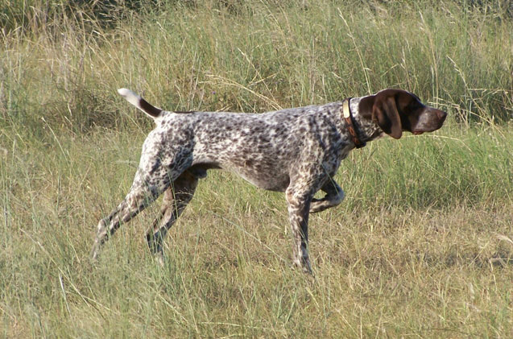
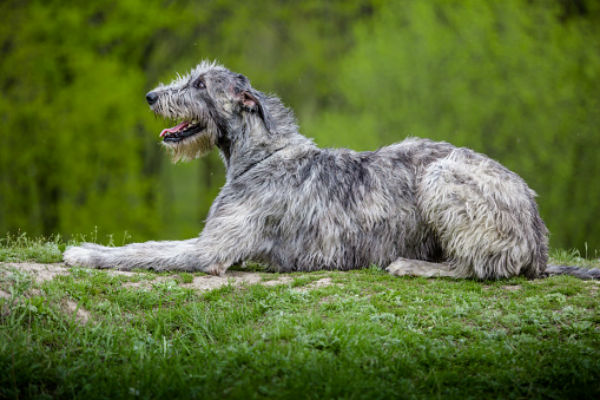
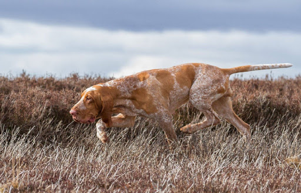

German Shorthaired Pointer
Picture

Description
History
This breed was developed in the 19th century in Germany for hunting.
Appearance
The size is medium to large. They have moderately long floppy ears, long and strong muzzle and straight profile. Eyes are generally brown. The coat is short and flat and it can be: brown, black, white, liver roan or liver and white.
Temperament
These dogs are smart, friendly, willing and enthusiastic. The are therefore suitable for family life and easy to train.
AKC page
Irish Wolfhound
Picture

Description
History
This is a historic sighthound breed from Ireland. These dogs have inspired literature, poetry and mythology.
Appearance
They are considered by the American Kennel Club as the tallest of all dog breeds. Their coat is rough, they are very muscular, strong though gracefully built. The coat can be grey, brindle, red, black, white, fawn and wheaten.
Temperament
They are most noted for their personal quirks abd individualism. They are generally introverted, intelligent, quiet and reserved. They are often favored for their loyalty, affection, patience and devotion.
AKC page
Bracco Italiano
Picture

Description
History
The breed originated in Italy during the Middle Ages. They were sought out by the aristocracy and used to hunt feathered game.
Appearance
They have pendulous upper lips and long ears that create a serious expression. The cooat is short, dense and glossy. The most common colours are: white-orange, roan-brown, chestnut or amber.
Temperament
They are very much a people-loving dog and thrive on human companionship, having a strong need to be close to their people. They are a particularly good family dog. They are very willing to please as long as they have decided that your idea is better than theirs. Obedience train is highly recomended.
AKC page